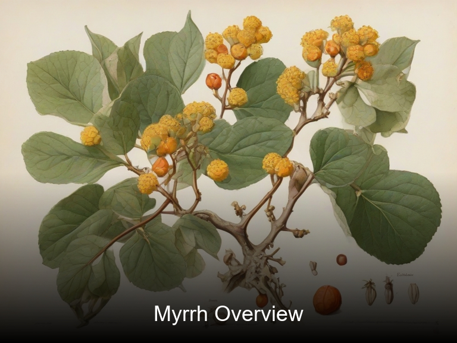
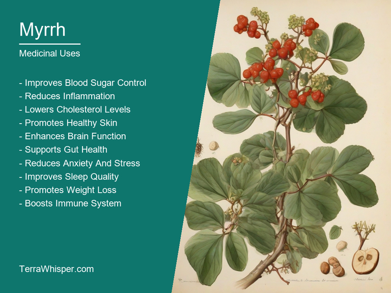
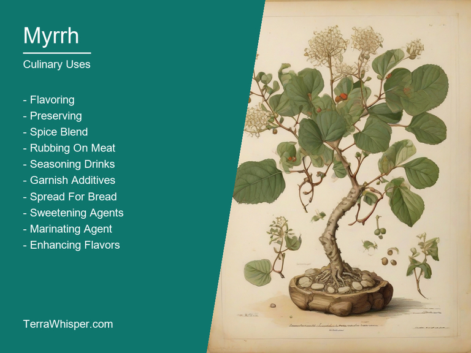
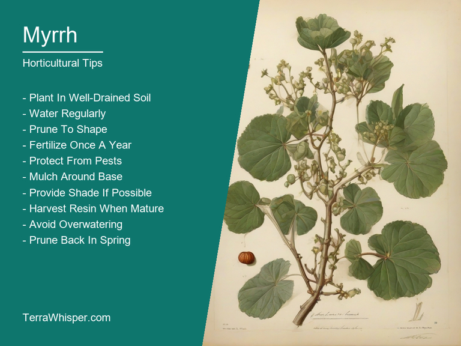
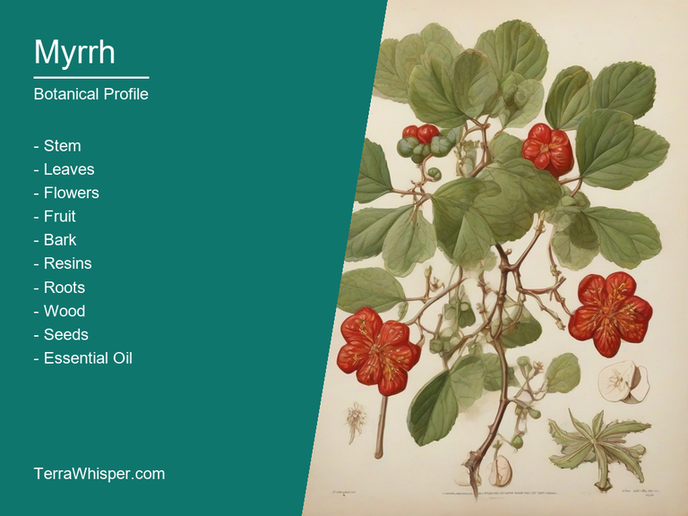
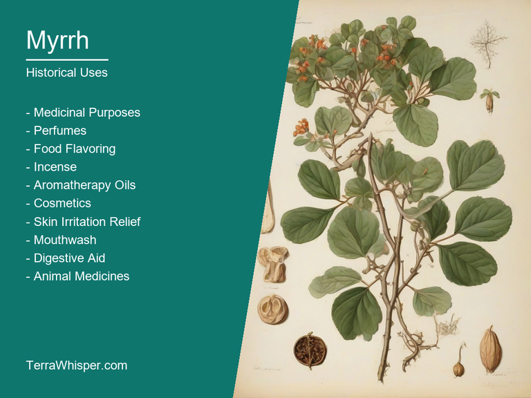

Myrrh, scientifically known as Commiphora molmol, is a versatile plant with various uses. Its medicinal properties have been utilized since ancient times for treating different health issues such as wounds, infections, and inflammation. It's also used in culinary applications, particularly in Middle Eastern cuisine where it adds unique flavor to dishes like baklava and rice pudding.
Commiphora molmol is a small, thorny shrub native to northeastern Africa and the Arabian Peninsula. Due to its attractive appearance and adaptability, the plant has become popular in horticultural settings as an ornamental element, offering brightly-colored flowers and interesting bark patterns.
The historical relevance of Myrrh can be traced back to ancient Egypt where it was highly valued and often used during the embalming process. It also holds a significant role in many religions, particularly Christianity, as one of the three gifts brought by the Magi to baby Jesus.
In this article, you will discover what are the medicinal and culinary uses of myrrh. Then, you'll learn how to cultivate it, what is its botanical profile, and how it was used historically.
Myrrh (Commiphora molmol) has many health benefits, including its antibacterial, antifungal, and anti-inflammatory properties. It is also known for its ability to improve the immune system, aid digestive health, promote skin healing, and ease menstrual cramps. Additionally, this resinous substance can be helpful in relieving pain related to injuries or arthritis.
The following illustration lists the most important uses of myrrh in medicine.

The medicinal constituents found within Myrrh mainly comprise various terpenes such as limonene, pinene, and myrcene; sesquiterpenoids like incensole, incensyl acetate, and caryophyllene; volatile oils like borneol; a host of phenolic compounds including flavonoids; and other organic compounds. These constituents contribute to the numerous health benefits associated with Myrrh.
Traditionally, various parts of the Myrrh plant have been used for medicinal purposes, such as the gum-resin, bark, leaf buds, and even roots. The resin is typically the primary component used in modern times for its healing properties. It can be found in different forms, including powdered or encapsulated forms, tinctures, essential oils, creams, or capsules.
While Myrrh offers numerous health benefits, it's important to consider possible side effects. Some individuals may experience skin irritation or allergic reactions after coming into contact with Myrrh, and using too much of it could cause diarrhea, vomiting, or upset stomach. In some cases, pregnant women should avoid using Myrrh due to a potential risk of miscarriage.
As a precautionary measure, it's advisable to consult with a healthcare professional before incorporating Myrrh into one's health regimen. The healthcare provider can recommend an appropriate dosage and guide you on any necessary modifications depending on your specific health needs and concerns.
Myrrh (Commiphora molmol) is a resinous tree with numerous culinary uses, often utilized for its unique flavor and aroma in various dishes. Its fragrant essence adds depth to recipes, making it popular as a gourmet spice among professional chefs and home cooks alike.
The following illustration lists the most common uses of myrrh for culinary purposes.

Myrrh's flavor profile is quite distinctive and can be described as warm, earthy, and slightly bitter with hints of smoke. The resinous quality adds complexity to dishes, making it an excellent addition to savory meals, desserts, marinades, and even beverages.
While the entire tree is not edible, certain parts like the gum-resin (tears) that form at the end of the branches are harvested for culinary purposes. These tears are dried to form small pieces called "balsam" which can be easily crumbled into meals.
To incorporate Myrrh in cooking, chefs should keep a few tips in mind. For instance, it's essential to use the right amount since excessive use might overpower a dish's flavors. The resin can be added at various stages of cooking, like incorporating its flavors with herbs and spices during marination or sautéing vegetables.
Despite its culinary uses, it is important to consider any side effects and potential toxicity when using Myrrh in food preparation. While rare, some individuals might experience allergic reactions or gastrointestinal issues after consuming dishes containing this spice. Consulting a healthcare professional before incorporating Myrrh into one's diet is always recommended.
Myrrh, also known by its scientific name Commiphora molmol, is a small tree native to North Africa and the Arabian Peninsula that belongs to the Burseraceae family. Being known primarily for its fragrant resin used in various religious ceremonies and medicinal purposes, this horticulture requires attention but is not too demanding when cultivated properly.
The following illustration lists the most important tips to cutlitvate myrrh.

To grow Myrrh successfully, you need to plant it in well-draining, slightly alkaline (pH 7.5 to 8.5) soil that is rich in organic matter and nutrients. Provide the tree with full sun exposure for optimal growth and be careful about its spacing requirements - a minimum of 90cm between individual plants is recommended. Planting during the early spring season will give your Myrrh tree ample time to establish roots before the dry summer months arrive.
The ideal growing conditions for Myrrh include well-draining soils, full sun exposure, and slightly alkaline pH levels that support nutrient absorption. Optimal soil should be rich in organic matter to promote healthy growth. It is essential to manage irrigation to maintain consistent moisture levels without overwatering or waterlogging the roots, which can lead to root rot and poor development of the tree. A moderate amount of fertilizer application during the growing season can also help boost productivity in Commiphora molmol.
Myrrh trees require minimal maintenance once established. Pruning should be carried out regularly to maintain a healthy appearance by trimming any dead or damaged branches, promoting new growth and preventing overcrowding. Additionally, it is important to remove any weeds that may compete with the tree for water and nutrients, while ensuring that the soil remains free of pests and diseases that could affect the health of your Myrrh plant.
Myrrh, with botanical name Commiphora molmol, belongs to the domain Eukarya, kingdom Plantae, phylum Magnoliophyta, class Magnoliopsida, order Sapindales, family Burseraceae, genus Commiphora and species molmol. It is commonly known as Gugul or Guggulu in India.
The following illustration display the botanical profile of myrrh.

There are several variants of Myrrh due to differences in the growing conditions and geographical locations. One notable variant is Commiphora gileadensis which occurs more often in desert regions, while others have been identified based on their unique characteristics.
Commiphora molmol or Myrrh is a small tree with thorny branches, reaching up to ten feet tall. The leaves are arranged alternately and are simple, entire and sessile with rounded tips. The flowers appear in clusters and are small, white, or pinkish-white in color. The fruits of this plant are small, round and black in color.
Myrrh is native to the Arabian Peninsula and parts of East Africa, particularly in areas like Eritrea, Ethiopia, Somalia, Saudi Arabia, Yemen, Oman, and the United Arab Emirates. Its natural habitat includes dry and rocky mountain slopes as well as desert regions with sparse rainfall where it can thrive.
Myrrh has a life cycle that follows the typical plant life cycle characteristics; it starts from seed germination, growth through various stages including vegetative propagation, flowering and ultimately, fruit formation followed by seeds ready to disperse.
The ancient art of healing has always been an integral part of human civilization. One such herb that has been used for ages for medicinal purposes is Myrrh (Commiphora molmol). This aromatic gum resin is extracted from the Commiphora trees which primarily thrive in East Africa and Arabian Peninsula. With a history spanning back thousands of years, it has played a vital role in traditional medicine systems such as Ayurveda and Unani.
The following illustration lists the most well known historical uses of myrrh.

Myrrh has been used for various purposes, including its anti-inflammatory properties to treat wounds and infections. It was also believed to cure conditions related to the respiratory system like asthma and cough. Moreover, it has been used as an effective aid against mouth diseases such as toothaches and gum bleeding because of its antiseptic and healing powers.
Myrrh has not only been a crucial element in traditional medicine but also played a significant role in the realm of divination practices, rituals, and religious ceremonies in several ancient cultures. For instance, the Egyptians considered it to be sacred and used it as an essential ingredient in their embalming process. The Romans were familiar with Myrrh's healing properties and often used it during funeral rites as well as for medicinal purposes.
Legendary stories associated with Myrrh are also quite intriguing. One such story, prevalent among the people of Yemen, talks about a king who had an ill daughter. The king's courtiers suggested using Myrrh to cure her ailment. However, he initially refused to use it as he was unaware of its potency. A wise man then explained that the miraculous healing properties of Myrrh were hidden under a hard outer shell, just like the princess who appeared fragile but possessed inner strength. The king learned a valuable lesson about the importance of exploring different layers of things to find their true potential and ultimately used Myrrh for his daughter's treatment.